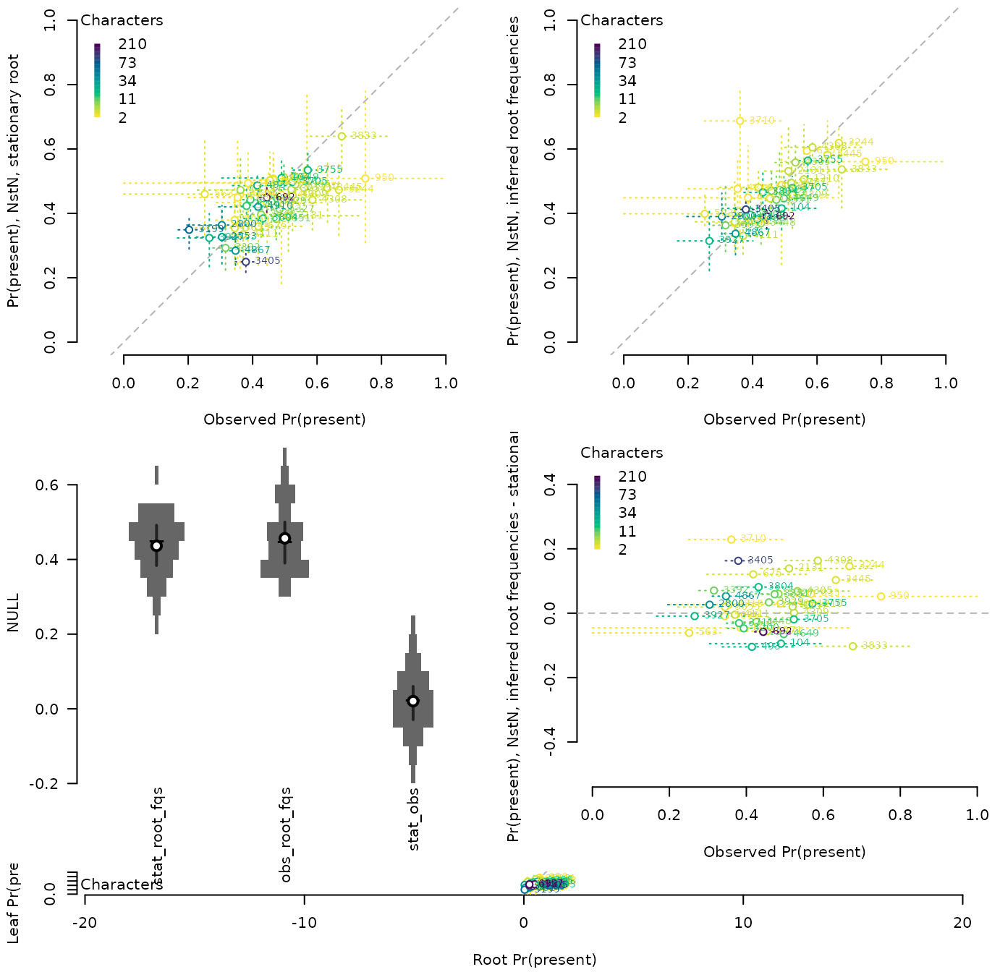
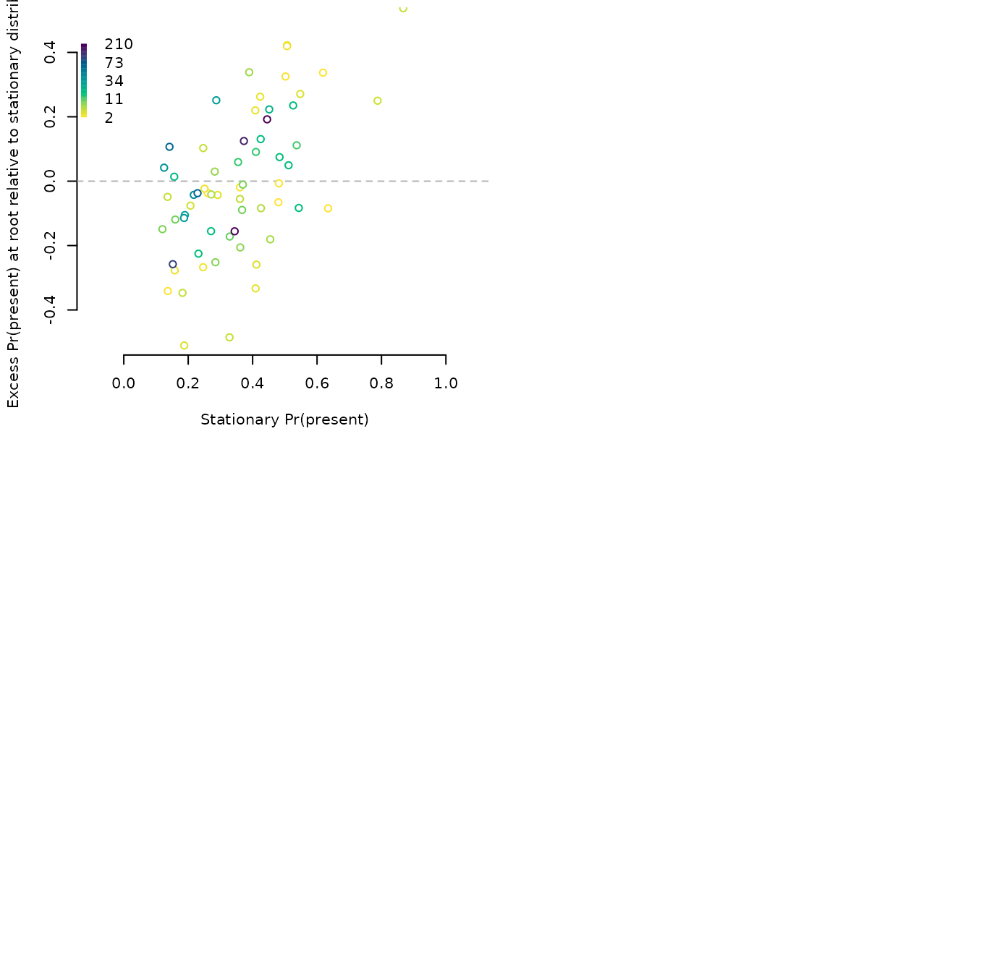
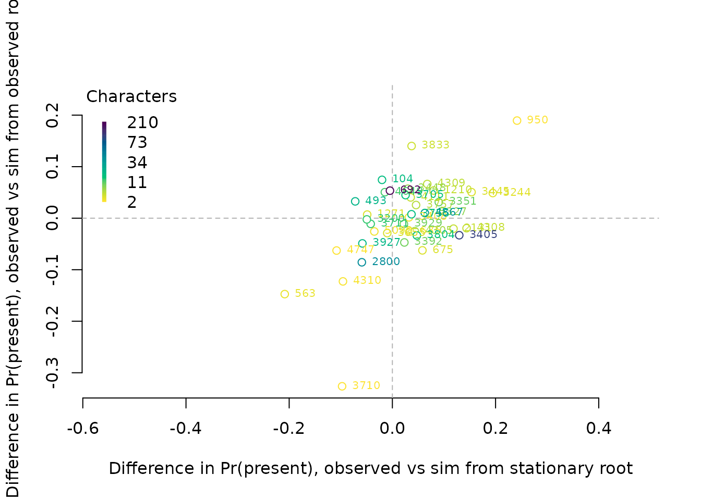
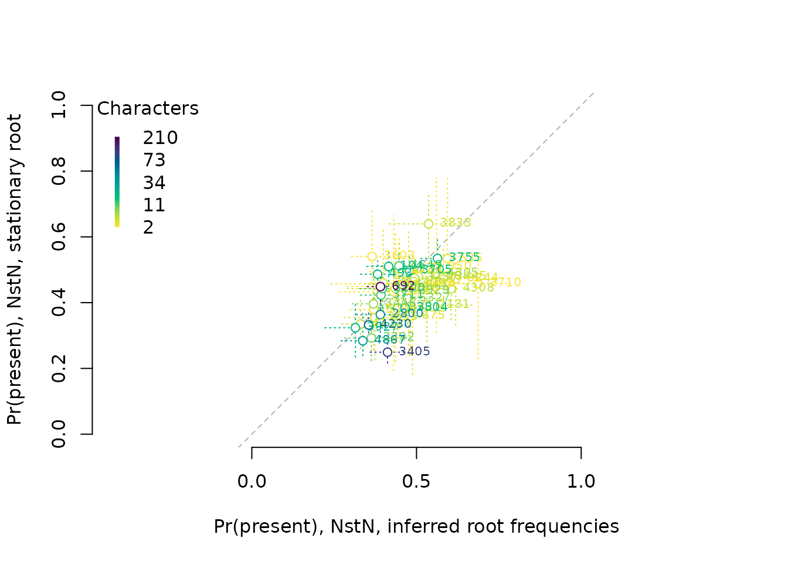
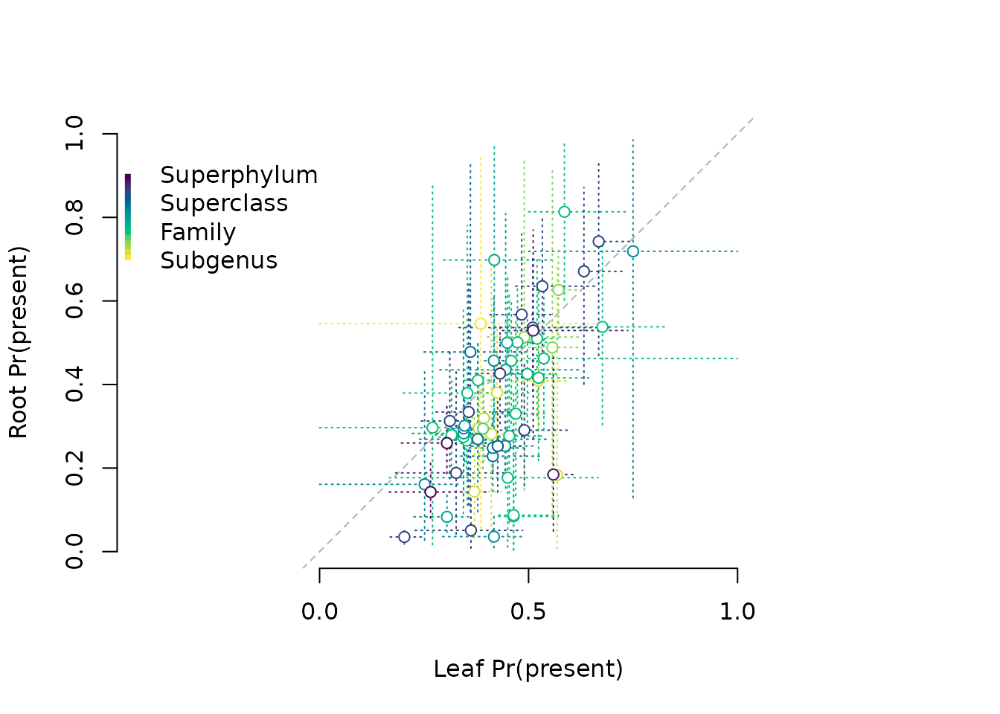
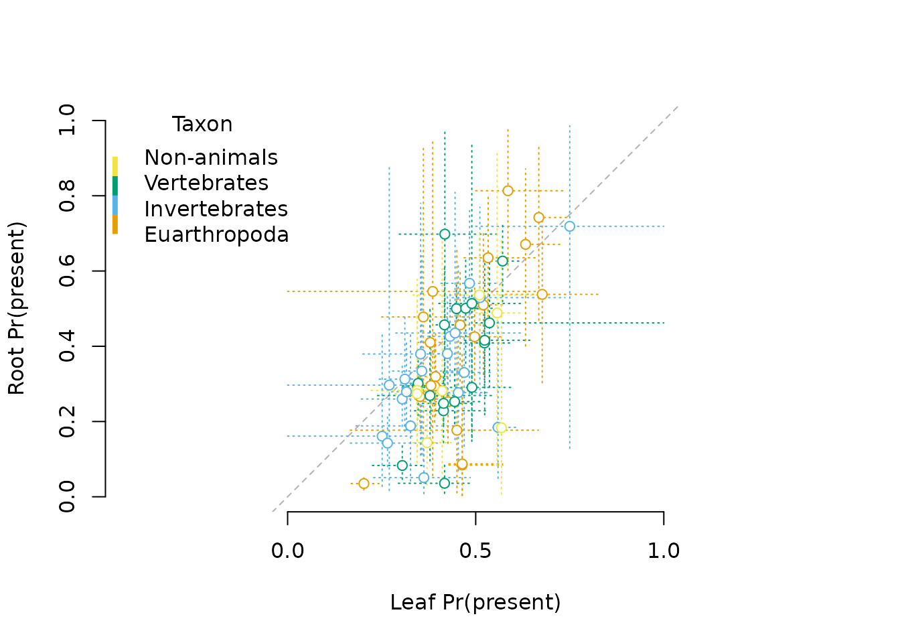
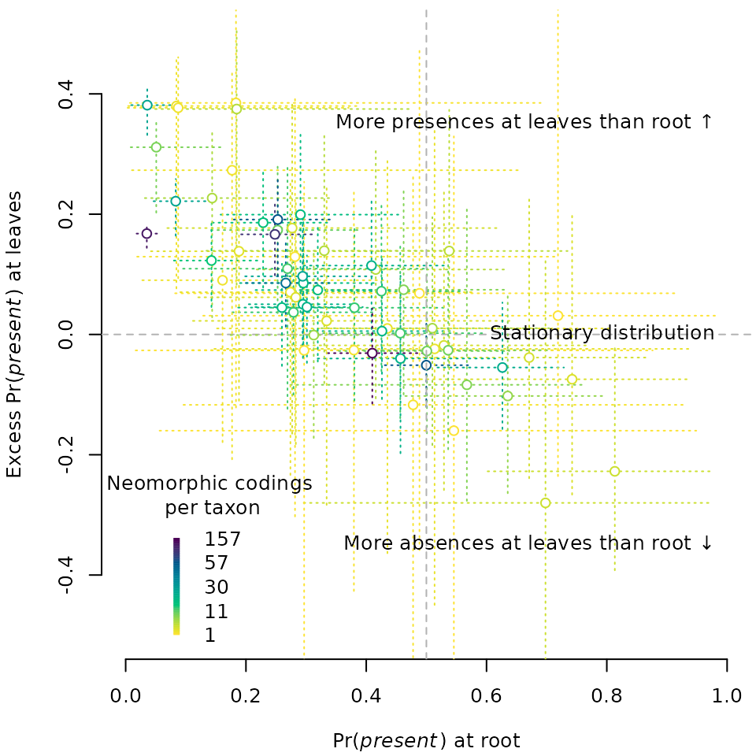
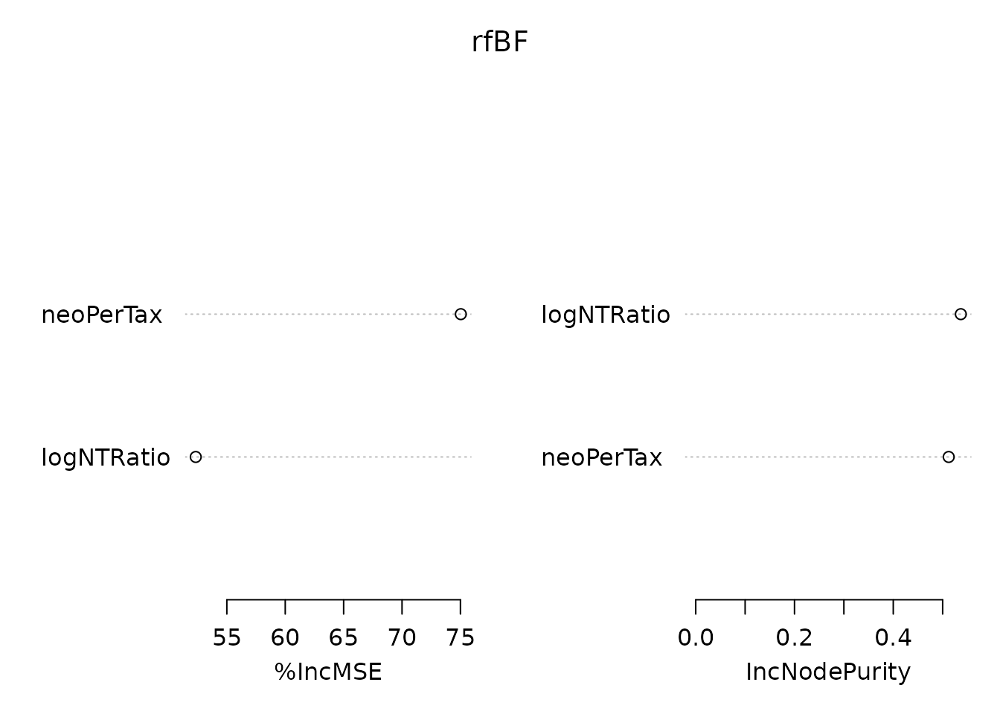

vignettes/stationarity.Rmd
stationarity.Rmd
.sim_available <- !isFALSE(Simulated01s(KiProjects()[[1]], "by_n_ki"))## Warning in .GitClone(pID, scriptID): Cloning into '/home/runner/work/_temp/Library/revbayes-repos/104_by_n_ki'...
## fatal: could not read Username for 'https://github.com': terminal prompts disabled## Warning in ConnectSSH(): sshLogin environment variable not set in ConnectSSH()
.cache <- system.file("extdata/stationarity_data.RData", package = "neotrans")
if (.sim_available) {
p1 <- vapply(KiProjects(), function(pID) {
neo <- InfNeo(pID)
p1Taxa <- neo[["1"]] / (neo[["0"]] + neo[["1"]])
p1Obs <- sum(neo[["1"]]) / sum(neo[["0"]], neo[["1"]])
p1Sim <- Simulated01s(pID, "by_n_ki")
if (length(p1Sim) < 2) {
return(rep(NA_real_, 1 + 6 + 6))
}
cli::cli_progress_message("{pID}: Compute Sim stats")
p1Sim <- p1Sim["1", ] / colSums(p1Sim)
c(obs = p1Obs,
obs = quantile(p1Taxa, c(0.025, 0.25, 0.5, 0.75, 0.975), na.rm = TRUE),
obs.mad = mad(p1Taxa),
sim = quantile(p1Sim, c(0.025, 0.25, 0.5, 0.75, 0.975), na.rm = TRUE),
sim.mad = mad(p1Sim))
}, double(1 + 6 + 6)); cli::cli_progress_done()
ns1 <- vapply(KiProjects(), function(pID) {
c(obs1 = InfNeo(pID)[[c("p", "1")]],
obs1 = quantile(InfNeo(pID)[["p1"]], c(0.25, 0.75), na.rm = TRUE),
root1 = ExistingResults(pID, "ns_n_ki")[["parameters"]][
, "root_freqs.2."] %||% rep(NA_real_, 6))
}, double(1 + 2 + 6))
nsP1AtStat <- vapply(KiProjects(), function(pID) {
p1Sim <- Simulated01s(pID, "ns_n_ki", "stat")
if (length(p1Sim) < 2) {
return(rep(NA_real_, 6))
}
p1Sim <- p1Sim["1", ] / colSums(p1Sim)
c(sim = quantile(p1Sim, c(0.025, 0.25, 0.5, 0.75, 0.975), na.rm = TRUE),
sim.mad = mad(p1Sim))
}, double(6)); cli::cli_progress_done()
nsP1AtObs <- vapply(KiProjects(), function(pID) {
p1Sim <- Simulated01s(pID, "ns_n_ki", "obs")
if (length(p1Sim) < 2) {
return(rep(NA_real_, 6))
}
p1Sim <- p1Sim["1", ] / colSums(p1Sim)
c(sim = quantile(p1Sim, c(0.025, 0.25, 0.5, 0.75, 0.975), na.rm = TRUE),
sim.mad = mad(p1Sim))
}, double(6)); cli::cli_progress_done()
rootFreqCf <- vapply(KiProjects(), function(pID) {
par <- ExistingResults(pID, "ns_n_ki")[["parameters"]]
if (is.null(par)) {
MakeSlurm(pID, "ns_n_ki", ml = FALSE)
return(rep(NA_real_, 2))
}
n <- 1 / par["50%", "rate_loss"] # confusingly named?
c(pi0 = 1 / (1 + n), # Probability of absence at stationary distribution
a0 = par["50%", "root_freqs.1."])
}, double(2))
delta <- rootFreqCf["a0", ] - rootFreqCf["pi0", ]
} else {
load(.cache) # loads p1, ns1, nsP1AtStat, nsP1AtObs, rootFreqCf, delta, kiNeoChar
}
.meta <- Metadata()
kiNeoChar <- .meta$nChar["neo", KiProjects()]
OutputPlot("stationarity", 7.2, 7, function() {
layout(rbind(1:2, 3:4, c(5, 5)), heights = c(1, 1, 1/4))
par(mar = c(4.2, 4.2, 0.4, 0.4))
# Results of posterior predictive samples.
# These are not particularly illuminating.
ColErrPlot(
"Observed Pr(present)", p1["obs", ], p1["obs.25%", ], p1["obs.75%", ],
"Pr(present), NstN, stationary root",
nsP1AtStat["sim.50%", ], nsP1AtStat["sim.2.5%", ], nsP1AtStat["sim.97.5%", ],
lgdTitle = "Characters", colBy = kiNeoChar,
text = TRUE)
ColErrPlot(
"Observed Pr(present)", p1["obs", ], p1["obs.25%", ], p1["obs.75%", ],
"Pr(present), NstN, inferred root frequencies",
nsP1AtObs["sim.50%", ], nsP1AtObs["sim.2.5%", ], nsP1AtObs["sim.97.5%", ],
lgdTitle = "Characters", colBy = kiNeoChar,
text = TRUE)
postPred <- data.frame(
stat_root_fqs = nsP1AtStat["sim.50%", ],
obs_root_fqs = nsP1AtObs["sim.50%", ],
stat_obs = nsP1AtObs["sim.50%", ] - nsP1AtStat["sim.50%", ])
SpindlePlot(postPred)
ColErrPlot(
"Observed Pr(present)", p1["obs", ], p1["obs.25%", ], p1["obs.75%", ],
"Pr(present), NstN, inferred root frequencies - stationary root",
nsP1AtObs["sim.50%", ] - nsP1AtStat["sim.50%", ],
nsP1AtObs["sim.50%", ] - nsP1AtStat["sim.50%", ],
nsP1AtObs["sim.50%", ] - nsP1AtStat["sim.50%", ],
asp = NULL, ylim = 0.5 * c(-1, 1), line = "h",
lgdTitle = "Characters", colBy = kiNeoChar,
text = TRUE)
ColErrPlot(
"Root Pr(present)",
ns1["root1.50%", ], ns1["root1.2.5%", ], ns1["root1.97.5%", ],
"Leaf Pr(present)",
ns1["obs1", ], ns1["obs1.25%", ], ns1["obs1.75%", ],
lgdTitle = "Characters", colBy = kiNeoChar, text = TRUE)
ColErrPlot("Stationary Pr(present)",
1 - rootFreqCf["pi0", ],
1 - rootFreqCf["pi0", ],
1 - rootFreqCf["pi0", ],
"Excess Pr(present) at root relative to stationary distribution",
delta, delta, delta,
line = "h", ylim = c(-0.5, 0.5),
col = kiNeoChar)
})

dStat <- p1["obs", ] - nsP1AtStat["sim.50%", ]
dObs <- p1["obs", ] - nsP1AtObs["sim.50%", ]
ColErrPlot("Difference in Pr(present), observed vs sim from stationary root",
dStat, dStat, dStat,
"Difference in Pr(present), observed vs sim from observed root",
dObs, dObs, dObs,
line = c("h", "v"), xlim = range(c(dStat, dObs), na.rm = TRUE),
lgdTitle = "Characters", col = kiNeoChar, text= TRUE)
ColErrPlot(
"Pr(present), NstN, inferred root frequencies",
nsP1AtObs["sim.50%", ], nsP1AtObs["sim.2.5%", ], nsP1AtObs["sim.97.5%", ],
"Pr(present), NstN, stationary root",
nsP1AtStat["sim.50%", ], nsP1AtStat["sim.2.5%", ], nsP1AtStat["sim.97.5%", ],
lgdTitle = "Characters", colBy = kiNeoChar,
text = TRUE)
ColErrPlot(
"Leaf Pr(present)",
ns1["obs1", ], ns1["obs1.25%", ], ns1["obs1.75%", ],
"Root Pr(present)",
ns1["root1.50%", ], ns1["root1.2.5%", ], ns1["root1.97.5%", ],
colBy = droplevels(.meta$rank[KiProjects()]))
ColErrPlot(
"Leaf Pr(present)",
ns1["obs1", ], ns1["obs1.25%", ], ns1["obs1.75%", ],
"Root Pr(present)",
ns1["root1.50%", ], ns1["root1.2.5%", ], ns1["root1.97.5%", ],
lgdTitle = "Taxon",
colBy = .meta$taxon[KiProjects()], pal = palette.colors(5)[-1])
# The proportion of present states at the root deviates from the stationary distribution by > 0.1 in 20 of 64 datasets, and is 0.1 less than the stationary distribution in 20 datasets.
sum(delta > 0.1, na.rm = TRUE)## [1] 20
sum(delta < -0.1, na.rm = TRUE)## [1] 20## [1] 64
OutputPlot("rootVsLeaf", 5, 5, function() {
par(mar = c(4, 4.2, 0.4, 0.2), cex = 0.8)
ColErrPlot(
expression("Pr(" * italic("present") * ") at root"),
ns1["root1.50%", ], ns1["root1.2.5%", ], ns1["root1.97.5%", ],
expression("Excess Pr(" * italic("present") * ") at leaves"),
ns1["obs1", ] - ns1["root1.50%", ],
ns1["obs1", ] - ns1["root1.97.5%", ],
ns1["obs1", ] - ns1["root1.2.5%", ],
ylim = c(-0.5, 0.5), lgdPos = "bottomleft",
line = "h",
lgdTitle = "Neomorphic codings\n per taxon",
colBy = .meta$nNeoCoded[KiProjects()] / .meta$nTaxa[KiProjects()],
text = FALSE)
abline(v = 0.5, lty = "dashed", col = "grey70")
text(1.0, 0.35, "More presences at leaves than root \U2191", pos = 2)
text(1.0, 0, "Stationary distribution", pos = 2)
text(1.0, -0.35, "More absences at leaves than root \U2193", pos = 2)
})
moreAtLeaves <- ns1["obs1", ] - ns1["root1.97.5%", ] > 0
moreAtRoot <- ns1["obs1", ] - ns1["root1.2.5%", ] < 0
sum(moreAtLeaves, na.rm = TRUE)## [1] 15
sum(moreAtRoot, na.rm = TRUE)## [1] 1## [1] 64## [1] 0.14## [1] 0.48
leafExcess <- ns1["obs1", !is.na(moreAtLeaves)] -
ns1["root1.50%", !is.na(moreAtLeaves)]
leafProj <- names(leafExcess)
meta <- data.frame(
leafExcess,
nChar = colSums(.meta$nChar[, leafProj]),
obsP1 = ns1["obs1", leafProj],
nTrans = .meta$nChar["trans", leafProj],
nNeo = .meta$nChar["neo", leafProj],
logNTRatio = log(.meta$nChar["neo", leafProj] / .meta$nChar["trans", leafProj]),
neoPerTax = .meta$nChar["neo", leafProj] / .meta$nTaxa[leafProj],
taxon = .meta$taxon[leafProj],
rank = .meta$rank[leafProj],
nTaxa = .meta$nTaxa[leafProj]
)
leafPredictors <- c("nNeo", "obsP1", "logNTRatio", "neoPerTax", "taxon", "rank",
"nTaxa")
vsurfBF <- VSURF::VSURF(meta[, leafPredictors], leafExcess, verbose = FALSE)
predBF <- leafPredictors[vsurfBF[["varselect.pred"]]]
if (!length(predBF)) {
predBF <- leafPredictors[vsurfBF[["varselect.interp"]]]
}
message(paste0(predBF, collapse = ", "))## neoPerTax, logNTRatio
library("randomForest", quietly = TRUE)## randomForest 4.7-1.2## Type rfNews() to see new features/changes/bug fixes.
rfBF <- randomForest(meta[, predBF, drop = FALSE], leafExcess,
ntree = 10000, importance = TRUE)
importance(rfBF)## %IncMSE IncNodePurity
## neoPerTax 75.03455 0.5122981
## logNTRatio 52.33681 0.5368185
varImpPlot(rfBF, frame.plot = FALSE)